What a wonderful scent! I am sitting with a younger colleague in the first train to Brussels. We are programmers and heading to a rather important climate conference. Our seats are right at the back in a hyper-modern carriage, and I am facing the direction of travel. It is a bit cool—the air conditioning is probably not adjusted properly yet. But it is not just fresh; delicious aromas are spreading through the frosty air. In the next carriage, the dining car has opened, and the smell of coffee is hard to ignore. So I head towards the front of the train at about 5 km/h...
The train is moving steadily and very slowly—about 20 km/h. Outside on the platform stands a young woman, seemingly observing the activity on the train. She sees me moving towards the delicious scent at 25 km/h.
20 + 5 = 25. Velocities in the same direction add up. Interestingly, one could look at it differently: The observer at the railway line is not at rest. While she stands rock-solid on Earth, our planet orbits the Sun, and the Sun orbits the center of our galaxy in a wide path, which in turn has been in constant motion since the Big Bang. Who knows, perhaps my train and my own walk towards the coffee completely and coincidentally compensate for all these motions, and I am in absolute rest?! In any case, I can also claim: The observer, including the planet, is moving towards me at 25 km/h, and she is traveling at 20 km/h relative to the train.
Let's recap: The observer—physically minded, in my imagination—and I cannot agree on who among us is moving or whether either of us is in a state of rest. The only consensus is our relative velocity! I look outside and believe the young woman is looking at me somewhat amused and irritated.
Now let's imagine that it is not me rushing through the train. I (the blue smiley at the bottom of the illustration) remain comfortably seated and send my friendly and sportier fellow traveler (blue flash) forward to the dining car.
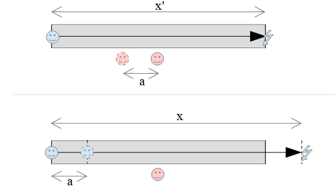
Mr. Blitz running through the train carriage.
Top: my perception inside the train,
Bottom: perception of the observer on the platform
the dashed lines show the position of the carriage after Mr. Blitz has arrived at the back end.
At the top of the graphic, you can see: While my fellow traveler has traversed the carriage length from left to right, the observer (pink) on the platform has moved a length towards me. From the observer's perspective (lower graphic), however, my fellow traveler has covered the longer path because during the time of his sprint to the end of the carriage, the entire train has moved forward by a distance .
The observer and I can convert our respective observations:
Here, can be easily calculated from the train's speed and the required time .
, or
We obtain the so-called Galilean transformation:
GT+
GT-
Suddenly an announcement sounds: Power outage. A substation needs to be repaired, and we must prepare for a delay of at least an hour. Mr. Blitz and I step out onto the platform—equipped with three steaming cups of coffee. The young woman smiles, so we dare to offer her a coffee. A few minutes later, the three of us are sitting at a solid wooden table, blinking into the morning sun. We tell Sarah—that's the friendly observer's name—about our thoughts, and she is immediately captivated. She mentions that she studies physics. She actually had very similar thoughts in her head as our train rolled past. Sarah pulls a notepad and pen from her backpack and immediately starts sketching...
To specify the position of objects in space, we use a 3D coordinate system.
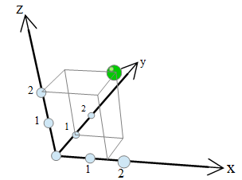
Description of a location in space using three coordinates
All three axes are treated equally. The length graduation on all axes is uniform. The green object gets the distinct position (; ; ).
To illustrate the motion of an object, we could produce a film. The illustration on the bottom left hints at this. If we want to include time explicitly in our coordinate system, we end up with somewhat unwieldy, difficult-to-draw four dimensions! For such a static representation, one could compress 3D space and introduce a fourth axis to assign every event (an event is something that happens at a specific place and time) a position (; ; ; ) in space and time. We could fold the three spatial dimensions even further—see the bottom center. But it gets much simpler. Since everything essential in our context can be understood with just a single spatial dimension, we simply drop the - and -dimensions (on the right in the illustration :-)
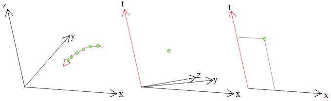
Events as green points in coordinate systems
Spatial coordinates; inclusion of time; reduction to one spatial and one time coordinate
By the way, we do not need a right-angled coordinate system here. We read off the -coordinate and the time of an event in such skew coordinate systems by moving parallel to the axes (top right illustration).
In such an coordinate system, the motion of an object is represented as a curve. If the curve is a straight line, it denotes motion with constant velocity, meaning without acceleration. Here—to warm up—a few observations:
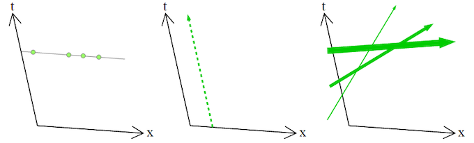
| Left: Events at different locations that lie on a straight line parallel to the -axis occur simultaneously. | Middle: An object at rest in the considered system "moves" parallel to the time axis in the diagram. | Right: Here we see motions of objects with different velocities (the flatter the slope, the higher the velocity). Here all three objects move to the right in our one-dimensional space towards larger values. |
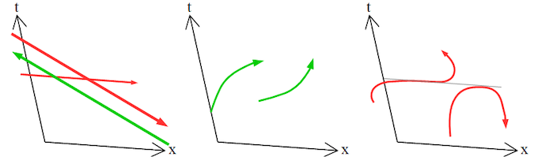
| Left: Motion parallel to the -axis corresponds to infinite velocity. An even steeper downward slope would mean an object traveling backward in time. Both are impossible (red). The green arrow, however, represents motion to the left towards smaller values. | Middle: The left object accelerates, its velocity increases. The right object brakes (negative acceleration). Its velocity decreases. Both objects move to the right. | Right: The left object has a point with an infinite slope, meaning infinite velocity. The right object even travels backward in time past the extreme point. Both are impossible. |
Let's look below at the situation inside the train and simultaneously from the platform viewpoint. Sarah opens her laptop and types a few formulas into a Python script. Lines and numbers appear. … We choose the axes such that all events are mapped to the same location in both coordinate systems. The red coordinate system with axes and belongs to the platform. The blue train coordinate system has axes and . The spatial axes and of both systems coincide. In the graphic below, the blue -axis overlaps the red -axis. The time axes and are tilted relative to each other to account for the relative velocity (20 km/h) of the two systems. The time axis of the train simultaneously represents the worldline of the events at my seat position within the platform system. We choose the origin such that Mr. Blitz's start lies at point (0,0) in both cases.
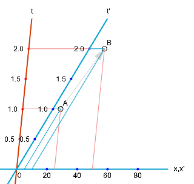
Space and time coordinates of events A and B
from the perspective of two mutually moving systems
Let's imagine the carriage is extremely long and consider two events:
A = "Position of Mr. Blitz after one hour" and
B = "Position of Mr. Blitz after two hours"
We read off the values for both events:
A: ,
B: ,
As a check, we verify that the Galilean transformation (GT+ ) is correctly represented for event B:
50 km = 10 km + 20 km/h * 2 h
The inverse calculation (GT- ) can also be read directly from the diagram:
10 km = 50 km - 20 km/h * 2 h
The equations apply equally to event A. We have drawn matching coordinate systems.
Since the subdivisions of the time axes were chosen such that the same values appear on all parallels to and , the previously implicit assumption holds that time passes equally in both systems:
GT-t
Right here, in the equal passage of time, lies an interesting inaccuracy in our previous concepts of space and time. Impressed, we look at the young woman, and Sarah begins to speak:
At the end of the 19th century, several experiments on the speed of light were conducted, suggesting that light speed is not only finite but always constant (Michelson-Morley experiment, 1887). The original goal was to detect an absolutely stationary aether through which light propagates. That simply didn't work out. In 1905, Einstein then questioned the entire aether theory and instead elevated the constancy of the speed of light to a postulate. Regardless of whether measurements are taken in a fast-moving or stationary apparatus, the result is always the same value of . This is extremely irritating, because intuitively, the speed of the moving measurement apparatus should add to the speed of light when light and apparatus move in the same direction. Let's really feel this irritation:
Let's start with a thought experiment: It's not Mr. Blitz jogging through the train, but a light particle (photon). And the train should move not just at 20 km/h, but at a very high speed on the order of about 20% of the speed of light. Otherwise, nothing else changes:
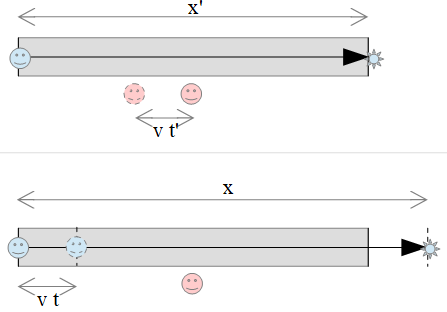
A photon flies through a very fast carriage
If you switch on a lamp sitting at the back of the carriage and a photon begins its journey towards the dining car, you measure the exact same speed for the photon as I do as an observer outside! To understand this effect, we must abandon our everyday notions of space and time. Let's see what the constancy of the speed of light implies for our considerations.
If your train were super fast, say 99% of the speed of light relative to Earth, the photon would still move away from you at a gigantic 300,000 km/s. Meanwhile, the observer outside would see both the photon and you moving at almost the same (quite high) speed. How can that be?
Velocity is distance per time. The constancy of the speed of light therefore forces distance and/or time for me inside the train to behave somehow differently than for the observer along the track. Let's speculate and try—following in Einstein's footsteps—to develop a theory of how distance and time might behave.
Sarah summarizes once more (illustration below): For converting the position and time of an event (green dot) between two mutually moving systems, we previously read values off the coordinate systems (red and blue) assigned to the respective systems. In doing so, the spatial axes and were identical. We assumed the speed of light was infinite. A photon starting at (0,0) thus moved along the - or -axis (yellow arrow). Apparently, this conversion works quite well for low relative velocities between systems.
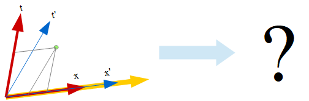
How do we modify coordinate systems given constant light speed?
The question is how to use the constancy of the speed of light to obtain correct conversions for high velocities as well. From the finiteness of the speed of light, it immediately follows that the yellow arrow cannot run parallel to and . We are free to choose units for time and distance. Let's choose the time unit such that the speed of light equals exactly 1, e.g., distance unit: light-years, time unit: years. Thus
or
or
for the motion of light particles.
Consequently, the trajectory of a photon starting at (0,0) must form the exact diagonal between the equally scaled axes!
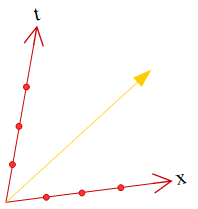
The photon's path forms the diagonal ( )
Mr. Blitz looks at the diagrams and murmurs: The speed of light seems not only finite and constant, but also acts as a speed limit, right? Sarah nods enthusiastically. Exactly: No matter how fast the train travels, inside the unaccelerated train you have no way of telling that the train is moving at all. (This is called the principle of relativity.) A photon emitted forward from your seat also behaves as usual: From your perspective, it flies towards the dining car at speed . Viewed from the platform, the photon is also seen flying at and reaching the dining car. You lag behind the light particle. Thus, viewed from the outside, you are traveling slower than …
If nothing can be accelerated faster than light, this also means that you can only influence events that can be reached slower than a photon. In the diagram below, everything inside the upper light cone is reachable from the origin. Conversely, only events occurring in the lower light cone can influence the origin. Sarah smirks. That is actually one of my favorite diagrams—thanks for asking about the speed limit, Mr. Blitz.
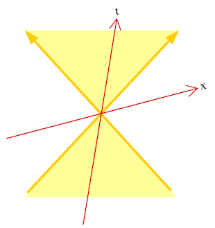
But let's see what we gain by aligning our units of distance and time with the speed of light:
The property that the constantly unchanging speed of light represents the diagonal between the axes must also hold for any other system moving at constant velocity relative to the system.
With this shared diagonal, we have an effective way to map coordinate systems onto one another. The paths of light-speed particles (the yellow diagonals) must be rotated symmetrically. The speed of light forms the line of symmetry between the axes. and always stand at the same angle to each other as and . Very interestingly, unlike in the Galilean transformation, the spatial axes cannot coincide. This means that not only does hold, but time in both systems must also behave differently:
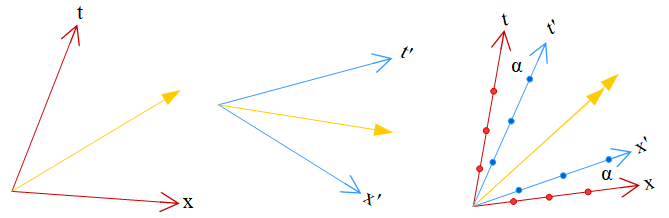
Aligning coordinate systems according to the shared yellow diagonal
The following questions remain open: The magnitude of the angle and the relative scale of the axes (right image) need to be determined. Let's first look at the tilt of the spatial axis:
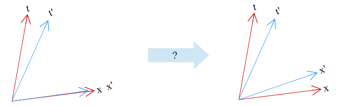
How can be separated from ?
Left shows the classical Galilean transformation with coinciding x-axes. How could one arrive at a situation like the one shown on the right from a technical standpoint?
Mr. Blitz throws Sarah a skeptical glance: "from a technical standpoint"? Is this still science? Sarah laughs. But of course! That's how it always works in science. We start with a depressing observation that doesn't fit our current equations. Then we try to modify the equations so that they cover all effects. The old theory often turns out to be an approximation of the new formulas. Ultimately, of course, experiments must test whether nature behaves as our new equations describe.
While Mr. Blitz and I are still pondering, Sarah unperturbed and full of drive continues to creatively alter previous truths:
The twist of the time axis is driven by the product in . Let's analogously twist by subtracting from the time equation:
Left:
and
(Galilean transformations GT+ and GT-t)
Right:
and
(Hypothesis to establish symmetry)
That works! We can achieve the symmetric axis twist this way. However, there is a problem with the scaling of the - and -axes. The inverse transformation (blue to red: and ) does not map the same values back onto each other. Here is an example for half the speed of light : Let's transform an event back and forth using our guessed equations. Starting with location on the red -axis:
( , ) → ( , ) → ( , ).
The times and match. That's good. If forward and inverse transformations matched each other, should also match . To visualize this problem, we draw grey paths in the red system from () via the corresponding point on the blue axis back to () (again in the red system). The starting and endpoints of the grey paths should coincide, but they don't:
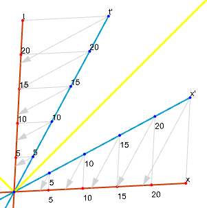
Forward and inverse transformation do not match yet ( )
Since the erroneous behavior for space and time is identical and appears like a zoom or scaling, we try introducing a simple scaling factor into both equations.
Right:
and
(improved hypothesis)
If we choose arbitrarily as 1.1, we indeed get a better result. The grey arrowheads approach the starting point:
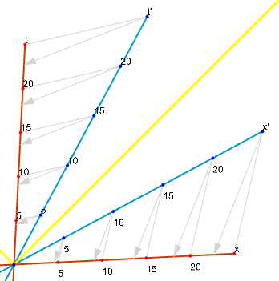
Forward and inverse transformation match a bit better ( )
Let's determine precisely. Consider any arbitrary event . The transformation produces event . Applying the inverse transformation to must yield again. Let's exploit that.
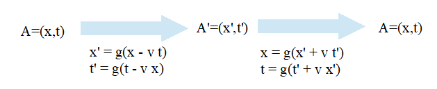
Mr. Blitz looks thoughtfully at the equations: Actually, the forward and inverse transformations should be identical in form, except that velocity has an opposite sign depending on whether you go forward or backward along the x-axis. Sarah confirms: Sharp eye! Yes, there should be no fundamental difference between the forward and inverse transformations. You can't really say who is actually moving. The direction of transformation follows solely from the direction of velocity. Let's see if that works…
So let's substitute the transformation equations into an inverse transformation equation:
thereby eliminating and :
Let's simplify (factoring out , multiplying out ):
The terms cancel out, eliminating time :
Factoring out and dividing both sides by also removes position:
Solving for , we obtain the factor which depends solely on :
We did it!
With this result, the coordinate system matches our goals. We achieve symmetry in and both directions of space-time transformations work. The grey arrows map onto each other correctly:
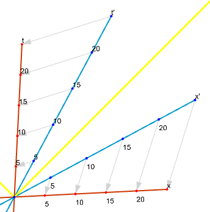
Forward and inverse transformation work (correct )
Indeed, this exact theory has been confirmed in experiments and forms a foundation of modern physics! Actually, we are finished. For completeness, we should consider what happens if we don't choose units such that .
The following diagram shows the asymmetry we must introduce when the speed of light is reinstated as a variable and no longer serves as a simple diagonal line of symmetry:
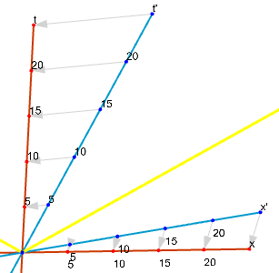
If the speed of light is not 1, the symmetry in the diagram disappears
When is no longer the symmetry axis, we must also break the equation symmetry of our previous approach and . Furthermore, the time equation still has a unit consistency problem. is dimensionless, so ought to yield a time. However, the product does not yield a time! Perhaps a unilaterally introduced factor can solve this problem while simultaneously producing the necessary asymmetry? Since is introduced, we must also reconsider our previous factor . It is likely to depend on . For distinction, let's use the Greek symbol instead of . Let's adopt the following general ansatz with two unknowns and :
and respectively for the inverse transformation:
and
As mentioned, even the symmetric factor (previously ) changes when we introduce . From it becomes:
We perform the derivation for just like above:…
Mr. Blitz groans softly. Sarah reassures him: Don't worry, the hardest part is really done. We follow the exact same steps as when calculating , just carrying along .
Let's substitute the transformation equations into an inverse transformation equation:
thereby eliminating and :
Solving for , we obtain the factor depending on and :
Mr. Blitz drinks his last sip of coffee and shows full attention again: Okay, that was really easy. And now we just need to calculate that ominous factor , right?
Yes, exactly, says Sarah. To do that, we consider an object whose behavior regarding , , , and we know precisely: a photon!
The speed of light is constant. It can therefore be described in both systems as
and
For the motion of a photon, it thus follows:
Let's substitute our chosen ansatz for and on the right side:
cancels out. We convert the proportion into product form:
We substitute or :
Thus we obtain the typical formulation of the so-called Lorentz transformation:
L-x
L-t
with
Sarah draws a box around the last three lines. Then she looks up from her notepad and looks inquiringly, first at Mr. Blitz and then at me. Ah, I recognize Sarah's look. It's probably time for some feedback for an engaged instructor! I sit up and summarize what we've learned: An event has coordinates and in my system. Using the Lorentz transformation, I can calculate what coordinates and the same event has in a system moving relative to me at high speed . Sarah is visibly relieved and continues: Before we look at what these equations mean for our worldview, we can check whether the old theory is an approximation. Yes, it is: For small , approaches 1. In the time equation L-t, approaches 0. We see that the Galilean transformation is indeed a very good approximation for low speeds, as in our train example. At 5 km/h and 20 km/h, deviations are less than .
Here we see the application of the Lorentz transformation with two systems and an event A:
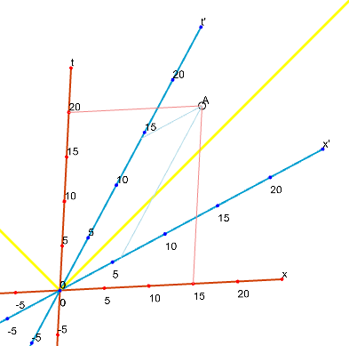
Reading off position and time for the same event A in both systems
Of interest are the lines along which simultaneous events lie in the respective system. These run parallel to the respective -axis, because time does not change there:
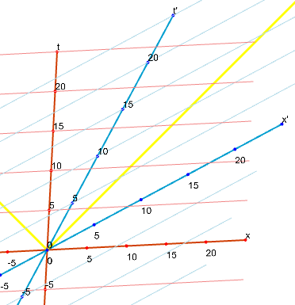
Lines of simultaneous events in the red and blue systems
With the constancy of the speed of light and the resulting rotation of the x-axes, simultaneity becomes a relative phenomenon. Things that happen simultaneously in one system do not happen at the same time in the other reference frame!
Let's look at the intersection points of the lines of simultaneity with the time axes: If the clock in the red system shows 10, you read less than 10 in the blue system. If the clock in the blue system shows 10, you read less than 10 on the red time axis. Viewed from either system, the clocks in the other system run slower!
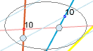
If the clock shows 10, it is not yet 10 on the opposite side
Mr. Blitz shakes his head in irritation: Both a space traveler and an Earth dweller see time passing more slowly in the other system. But in the movie “Interstellar“, the traveling father has aged considerably less than his daughter by the end?!
Yes, I chime in excitedly. In a children's magazine ("Frösi" it was called) I read about the twin paradox 40 years ago. Back then, it made me want to become a physicist, I found it so fascinating: A twin goes on an interstellar journey and returns younger than his brother waiting on Earth. How is that compatible with the fact that in both systems the other clock runs slower?
Sarah leans back amused and gives us some time to think. Then she explains: The solution to the classical twin paradox lies in the fact that the traveling twin travels with varying speeds. He starts on Earth, accelerates, and later slows down significantly during his journey. In the end—during the clock comparison—he has the exact same velocity again as his brother on Earth. However, our previous considerations applied only to unaccelerated systems! Let's look at what happens with acceleration…
Then the station announcer's voice rings out: The delayed train to Brussels departs in five minutes from track 1. Please board immediately! Thank you for your patience! Now arriving on track 3: the regional express to Mannheim.
Oh—the train to Mannheim is mine, says Sarah. Have a good trip! I'll program the twin flight for you later and email it to you!
I quickly hand Sarah my business card.
A few minutes later, Mr. Blitz and I are sitting back in our train on the way to the capital of Europe. Right on the neighboring track stands the train to Mannheim. It is not very crowded. I try to read, and Mr. Blitz looks to see if he can spot Sarah in the neighboring train. It would be too big a coincidence if her seat were precisely at our height. As we pull away, window by window of the regional express slowly passes by faster and faster. For Mr. Blitz, this makes searching for Sarah much easier. There she is! She is actually looking over and waving! Suddenly our train jerks again. We look toward the platform and see that we haven't even started moving yet! We are still standing. Apparently, a new railcar is just being coupled. Mr. Blitz and I look at each other and have to grin: Sarah's train pulled out of the station while we were standing the whole time! We only believed our train was moving because of that initial jerk. This spontaneous refutation of the assumption that what constitutes "rest" is entirely obvious fit this strange morning just a bit too well.
In the evening, exhausted, we reach our hotel room—the first grueling afternoon of the climate protection conference is finally over—we find Sarah's email, and all fatigue vanishes:
Dear Henry,
did you have a good day?
Let's look at what truly fast motion with a spaceship might look like and how time behaves in accelerated systems. Attached you will find the Python program I used to generate the diagrams. You can simply run it. But I also took screenshots; that should be enough to understand the effects.
Here is a flight to a "nearby" star and back to Earth:
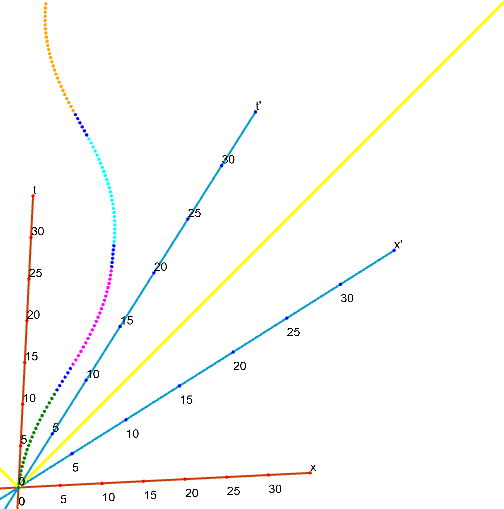
Flight phases (dotted curve) of a spaceship in space and time
from Earth to a star and back
Let the red space-time system be the coordinate system in which Earth is at rest. Since absolute rest does not exist, the tilt of the axes is chosen arbitrarily. The dotted curve represents the trajectory from bottom to top. There are four accelerated flight phases connected by dark blue drift phases with engines off.
Green: At time 0, a twin brother sets off and accelerates at a comfortable rate of 9.81 m/(s*s). This acceleration feels exactly like Earth's gravity. Incidentally, this is only the acceleration experienced by the traveler. Viewed from Earth, the acceleration decreases over time.
Blue1: Once the spaceship has reached nearly half the distance to the target star, the engines are shut off. The ship coasts powerlessly at maximum velocity towards the target. The light blue axis system is a coordinate system in which the spaceship is at rest during this phase: The -axis is parallel to the first blue-dotted line. This section is perfectly straight and has no curvature because the velocity, although very high relative to Earth, does not change. The ship experiences weightlessness during this unpowered phase. The spaceship is now rotated so that the thrusters point forward. Then the braking phase begins:
Pink: The spaceship is decelerated with the same force, but now in the opposite direction, as it was previously accelerated. Due to the new orientation of the ship with thrusters facing the target, the spaceship experiences the exact same magnitude and direction of apparent gravity as in the green flight phase. That is very comfortable!
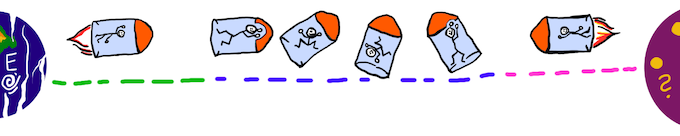
The first three flight phases
Blue2: Now the spaceship has finally arrived at its destination. The engines are turned off. has reached its maximum value. This curve segment is parallel to the red -axis. This means the target star flies through space at approximately the same speed as Earth. The relative velocity between Sun and target star is roughly 0. The twin enthusiastically explores the alien solar system and makes friends with the locals. When he is not subjected to the gravity of alien planets, he moves around weightlessly.
Turquoise: The return flight begins again with an acceleration adjusted to match Earth's gravity. This prevents bone loss and muscle atrophy. Stronger acceleration, on the other hand, would be very exhausting or even unhealthy.
Blue3: Once again, maximum velocity relative to the Earth system is reached. The ship is turned around again so that the thrusters point toward home.
Orange: The final braking phase brings the spaceship back to Earth ( ). Inside the spaceship, pleasant pseudo-gravity prevails. The curve in the diagram gradually flattens out against the -axis. This means we end with a relative velocity of 0 relative to the Earth hurtling through space. Good! That will be a smooth landing.
But how does time behave inside the spaceship and on Earth during this flight?
Imagine a movie being filmed on Earth throughout the entire journey. This film is broadcast via radio into space and received by the spaceship. Let's also imagine that a movie is filmed inside the spaceship and sent back to Earth. Suppose each movie showed a clock? How would those clocks tick?
Below we see diagrams for both films. The bars represent the difference between one's own clock time and the counterparty's clock time. You can see that the clocks do not run in sync; otherwise, there would be no bars. Decreasing bars mean slow motion. Increasing bars mean timelapse. If neighboring bars are of equal length, time passes at the same rate, but there is a constant offset in the displayed time.
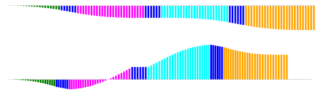
horizontal axis: own time
colored bars: other clock time minus own clock time
top: Earth looking at the spaceship
bottom: spaceship looking at Earth
Top depicts what the film received by Earth from the spaceship looks like. The steeper the downward slope of the bars, the stronger the slow-motion effect. During the middle dark-blue flight phase, the spaceship is at the target star. The clocks tick at the same rate during this phase because the relative velocity is 0. However, the spaceship clock shows an earlier time than the Earth clock. The bars extend downwards but do not change length. In the other two blue phases, the spaceship travels at maximum velocity. The downward slope of the bars (i.e., slow-motion) is strongest there. Events on board appear heavily slowed down during these flight phases. Overall, the traveler's clock shows less elapsed time upon returning to Earth. The traveling twin is younger than his brother on Earth in the end!
Bottom shows what the space traveler sees happening on Earth during his flight. Initially, he also sees events on Earth unfolding in slow motion. But during the first braking phase (pink), things reverse: slow motion turns into timelapse. In the second half of the pink braking phase, the timelapse even overcompensates for the preceding slow motion. There is a moment when both clocks show the exact same time—this is the zero-crossing of the bars. Afterward, the time bars point upward, meaning time on Earth has progressed further than in the spaceship from this point onward, and you see Earth time lagging behind (timelapse). At the target star (middle dark-blue region), the clocks tick at the same rate, but the Earth clock shows a later time than the spaceship's onboard clock. The return flight begins with a timelapse and continues as slow motion during the turnaround maneuver.
Note on transmitting films via radio: Since the radio signal must cover an increasing distance and can only manage this at the speed of light, you receive a distorted film (Doppler effect). As distance to the sender grows, you look further and further into the past. Since distances and thus propagation delays are always known, the films can be corrected for this delay effect at the end of the journey. In the diagrams, the time differences are displayed with this correction applied.
By the way, the space travelers in the movie “Interstellar“ essentially experience entirely different effects. It has to do with a black hole and the influence of mass! We can talk about that another time ;-)
Have a good evening and a successful conference!
Your Sarah
PS: Best regards also to Mr. Blitz! Could you perhaps beam me his email address?
Mr. Blitz and I pore over Sarah's email for a long time. This morning we had only talked about constant velocities. Sarah had explained to us via lines of simultaneity that at constant velocity, each observer sees the other's clock running in slow motion. The first and last dark blue flight phases are examples of this: Both films run in slow motion for the distant observer during these intervals. If the systems are at rest relative to each other, like in the middle dark blue flight phase, the clocks tick at the same rate. Only acceleration seems to make the difference. It produces timelapse and ultimately the twin paradox.
Then, with reddened eyes, we draft our reply:
Dear Sarah,
The conference hasn't been very pleasant so far. So many people are hitting the brakes! Hopefully, tomorrow will be better. But let's talk about something more joyful:
Thank you, thank you for the inspiring morning and your crazy email! Oh, how we would love to experience your programmed journey ourselves and watch the films!
We really understood a lot. We particularly like the bar charts. You can clearly see that the film Earth receives is significantly shorter. Exactly as much less time has passed on the spaceship as the length of the final bar. Correct?
We have two more questions:
In the film received by Earth, there are a few kinks. But acceleration changes velocities only gradually. We would have expected the time (the envelope of the bars) to change smoothly without kinks!?
There is no mention of acceleration in the formulas of the Lorentz transformation. How do you calculate the time curves?
Have a lovely evening and take your time answering!
Mr. Blitz & Henry
Mr. Blitz has already gone to bed when the computer chirps again and Sarah's reply pops up:
He he, you two explorers!
You have good physical intuition. Yes, the films have different lengths, exactly as you wrote. And indeed, the equations of motion can be derived from the Lorentz transformation: acceleration is the change in velocity, and velocity in turn is the temporal change of position. If you still remember your high school math: those are derivatives! Conversely, you can derive times and positions from acceleration through integration… You can see the results of integration in the Python code, but the derivation isn't entirely trivial because acceleration is only constant in the spaceship's own system.
Where accelerations begin or end in the lower Earth film (received by the space traveler), the envelope of the bars indeed forms kinks. This is because acceleration always starts quite suddenly: from 0 to 9.81 m/s², without transition. That isn't really physically possible. If you were to increase acceleration gradually—i.e., spooling up the thrusters continuously—the kinks would disappear…
BTW: Speaking of curve sketching: The envelopes of the bar charts always start and end perfectly horizontally because the clock tick rates must align during launch and landing as relative velocity slowly approaches 0.
And one more thing: One might assume acceleration is the cause of the twin paradox. But that's not entirely correct. It works entirely without acceleration too. Here is one final thought experiment for today:
There are two extraterrestrials, A and B, traveling at high constant velocity in opposite directions along the -axis. A flies past Earth and sets his clock to 0 in the process. At that exact moment, someone on Earth also sets a clock to 0. Much later, when A flies past B, B sets his clock to A's current time, say exactly 100 days. When B subsequently flies past Earth, his clock shows 200 days. But Earth's clock already shows 210 days since A's flyby!
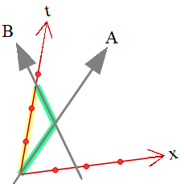
Extraterrestrials A and B encounter each other at the intersection of the grey arrows. B sets his own clock to A's time there.
The green kinked path is longer than the yellow one. Time passes fastest along straight paths (worldlines).
For an individual traveler to achieve different velocities, they do indeed require acceleration.
Well, now I really need to get some sleep. Take care, and save the climate nicely tomorrow ;-)!!
Your Sarah
I send a quick reply.
Thank you, Sarah!
These are super explanations. From the constancy of the speed of light and the principle of relativity ("you can't tell who is moving"), you derived such an "absolutely" spectacular theory! Truly impressive. Tomorrow we'll see if we can help illuminate the "relatively" easy-to-understand problem of saving the world through renewable energy ;-)
For now: Good night!
Your Henry
PS: By the way, Mr. Blitz was wondering earlier what you have planned for the weekend? I gave him your email address. Ha ha!
Oliver Bringmann, 2026